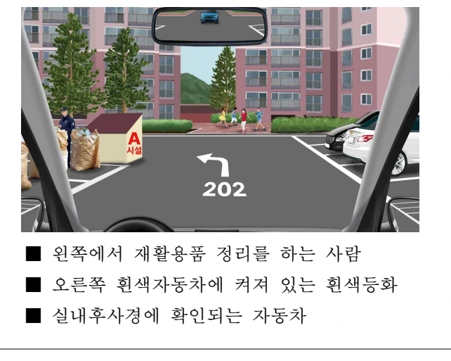

805. You are about to turn left from an apartment parking lot. Which of the following risks are NOT what you need to prepare for? (Select TWO)

- ①Area A, which is obscured by an object and cannot be seen
- ②A white vehicle, which is trying to reverse
- ③Possible collision with a recycling bag
- ④Playing children who may possibly enter the driveway
- ⑤Possible collision with a vehicle behind
Show answer
Answer
③ Possible collision with a recycling bag
⑤ Possible collision with a vehicle behind
Reference
The situation presented is one that is frequently experienced while passing through residential areas and apartment complexes. At this time, you should always be careful about areas hidden by apartment landscaping trees, food waste receptacles, and other structures. Pay special attention to area A above and make it a habit to approach slowly and stop before turning left. The white car's white lights are on, so it is expected to move backwards. Therefore, you must pay attention to whether that vehicle is reversing or stopped with the reverse gear engaged. Because the behavior of children in residential areas is unpredictable, you must drive while anticipating children entering the roadway. The possibility of colliding with a sack and the car behind is significantly low.
Reference text is a machine translation for study.